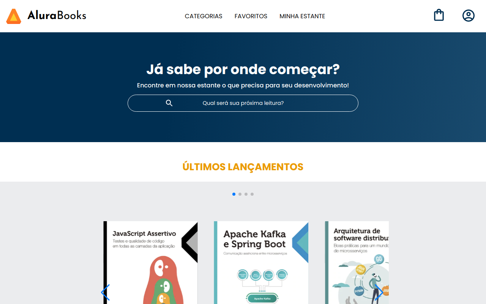
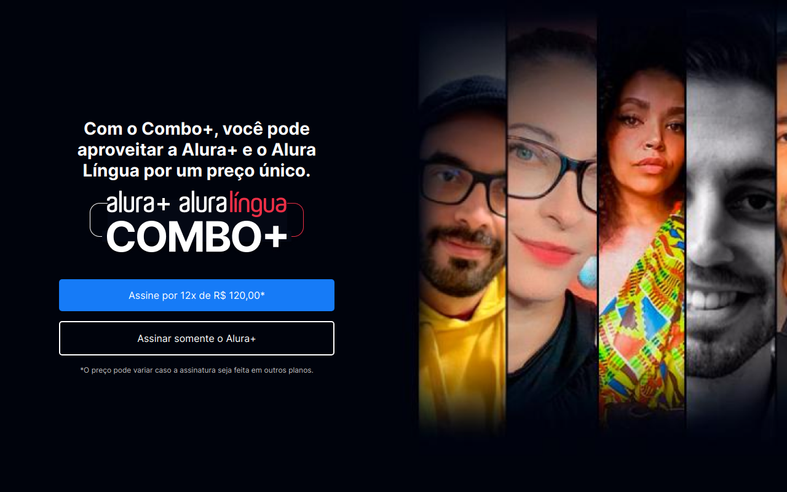
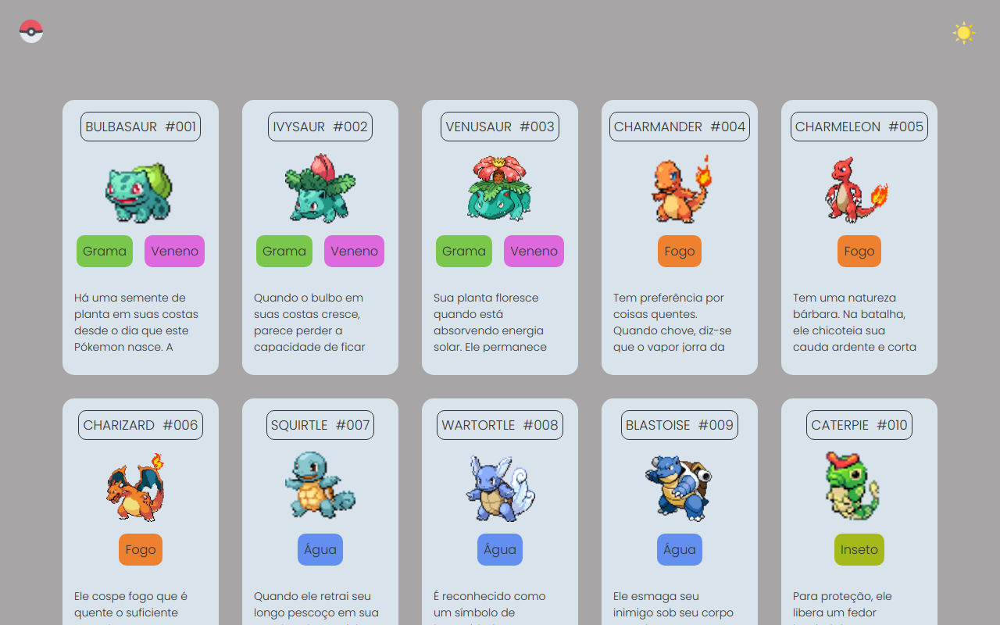
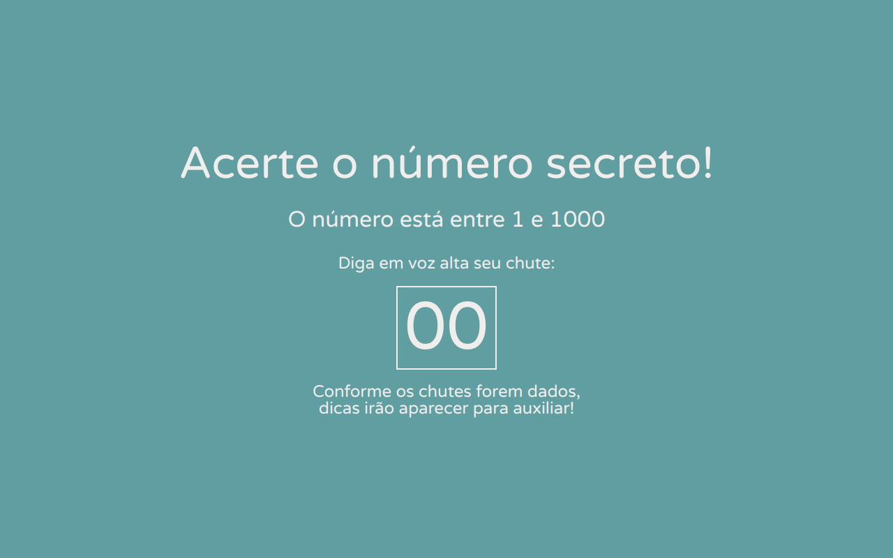
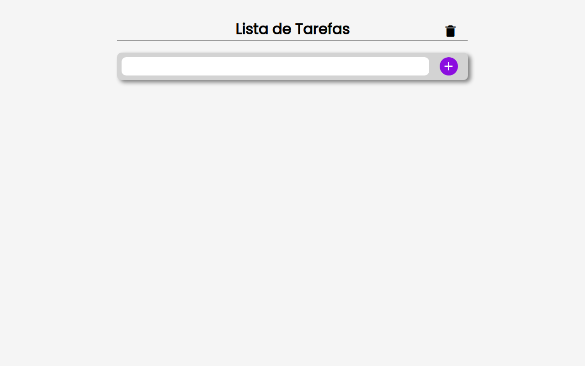

Aqui você pode conferir alguns dos meus projetos:
-
Jokenpô

Descrição: Projeto de jogo interativo de "Pedra, Papel, Tesoura". As tecnologias utilizadas foram HTML, CSS e Javascript.
-
Relógio

Descrição: Projeto de relógio funcional. As tecnologias utilizadas foram HTML, CSS e Javascript.
-

Alura Books
Descrição: Página da AluraBooks com área de cadastro do usuário feita através de cursos da Alura. As tecnologias utilizadas foram HTML, CSS e Javascript.
-

Alura Plus
Descrição: Projeto de site para plataforma de estudos realizado com cursos da Alura. As tecnologias utilizadas foram HTML e CSS.
-

Pokédex
Descrição: Projeto de pokédex interativa feito através de cursos online. As tecnologias utilizadas foram HTML, CSS e Javascript.
-

Jogo de Voz
Descrição: Projeto de jogo que utiliza comando de voz feito através de cursos da Alura. As tecnologias utilizadas foram javascript, CSS e HTML.
-

ToDo List
Descrição: Projeto de lista de afazeres funcional e interativa. As tecnologias utilizadas foram Javascript, CSS e HTML.
-
GusMoney

Descrição: Formulário de criação de contas para o banco virtual GusMoney. As tecnologias utilizadas foram HTML, CSS e Javascript.
-
Alura Array

Descrição: Projeto de página interativa utilizando métodos de array com javascript, feito por cursos Alura. As tecnologias utilizadas foram javascript, HTML e CSS.
-
Alura Play

Descrição: Página inicial e formulário de cadastro de vídeos da AluraPlay, uma plataforma de vídeos. As tecnologias utilizadas foram HTML, CSS, Javascript e NodeJS.